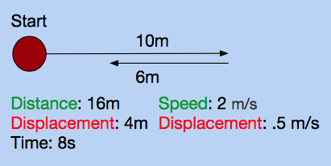
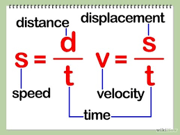
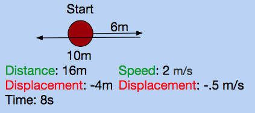

We've established the difference between vectors and scalars. However, there are other vectors and scalars besides displacement and distance. Two must-know's in physics are speed and velocity. As you know, speed is the rate as which distance changes with respect to time. You may have heard the term velocity, but not have known the difference between velocity and speed. Velocity is how displacement changes with respect to time.
Speed vs. Velocity
Let's say you walk forward 10 meters, then walk backwards 6 meters. It takes you 8 seconds to do this. We know that the distance traveled is 16 meters, and the displacement is 4 meters. If we want to find the speed and velocity, we divide the distance by time, or the displacement by time, respectively. Both speed and velocity use the unit meters per second, or m/s.


Positives and Negative Values for Velocity
Since vector values have direction, they can be positive or negative. Since speed only represents magnitude, it can only be positive. What is negative and what is positive depends on which way you define positive and negative. The convention in physics is that up, north, east, right, and forward are all defined as positive. Likewise, down, south, west, left, and backwards are all defined as negative. This holds true for displacement as well.

This interactive program allows you to see the relationship between distance and displacement. Click on the window, and use the arrow keys to move the circle around. At the top right corner, you will see the distance traveled and meters displaced.
Practice Problems
1. A ball rolls 5 meters straight ahead. What are its distance and displacement?
2. An airplane travels 50 kilometers north, then doubles back and travels 30 kilometers south. What are its distance and displacement?
3. A man runs a kilometer in a circle. When he finishes, he's in the same spot as he started in. What are his distance and displacement?
4. A skater skates 40 meters straight ahead. Wanting to impress his friends, he shows his skating prowess by suddenly turning after the 40 meters at a perfect 90 degree angle. He then travels 30 meters. What are his distance and displacement?
5. A physics teacher accidentally drops a ball two meters from the ground. He has quick reflexes, so on its way up, he catches it one meter from the ground after it bounces once. What is the ball's distance and displacement?
6. According to the program above, what is the maximum displacement of the ball? What is the maximum distance?
7. (Challenge) An airplane flies straight for 10 kilometers. Suddenly, a gust of wind offsets its course by 30 degrees. It continues to travel for 5 more kilometers. What are its distance and displacement?
Practice Answers
1.
Distance: 5 meters
Displacement: 5 meters
It travels 5 meters, so that is its distance. It is 5 meters from where it started off, so that is its displacement.
2.
Distance: 80 kilometers
Displacement: 20 kilometers
It travels 50 kilometers, then 30. It's total distance traveled is 80 kilometers. However, it travels 30 kilometers in the opposite direction it was initially flying in, so the distance between where it started and finished (aka displacement) is 50 - 30 = 20 kilometers.

3.
Distance: 1 kilometer
Displacement: 0 kilometers
He runs 1 kilometer, so that is his distance. However, he has not moved at all with respect to where he started, so his displacement is 0.

4.
Distance: 70 meters
Displacement: 50 meters
The boy travels 40 meters, then 30 meters. Therefore, the distance is 70 meters. However, he turns at a 90 degree angle. You can find the total displacement by drawing a right angle and solving for the hypotenuse.

5.
Distance: 3 meters
Displacement: 1 meters
It falls for two meters, then bounces up for one meter before caught. Therefore, the distance is 3 meters. However, the ball rises for one meter in the opposite direction that it fell in, so its displacement is 3 - 1 = 2 meters.

6.
Distance: Infinite
Displacement: 326 units
There is no limit to the distance. If you move back and forth, the distance traveled will just keep on rising. However, the ball cannot move outside of the screen. This limits the distance between the ball and the origin. The farthest possible distance away from the center can be found in any of the four corners, which will give you the number "326".
7.
Distance: 15 kilometers
Displacement: 14.55 kilometers
It travels 10 km, then 5 km. Therefore, its distance is 15 km. For its displacement, we have to take the 30 degrees into consideration. Draw a triangle where one leg is 10 km, and another is 5 km. The angle between them should be 150 degrees, because 30 degrees off course means 30 degrees from a 180 degree angle. Then use the law of cosines to solve for the final side, which is displacement.